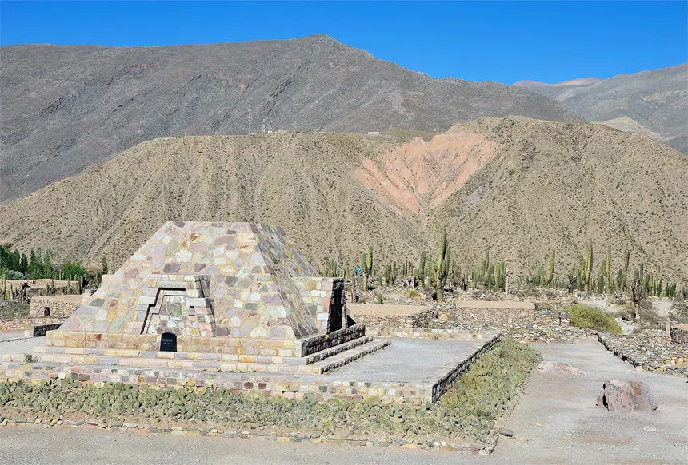
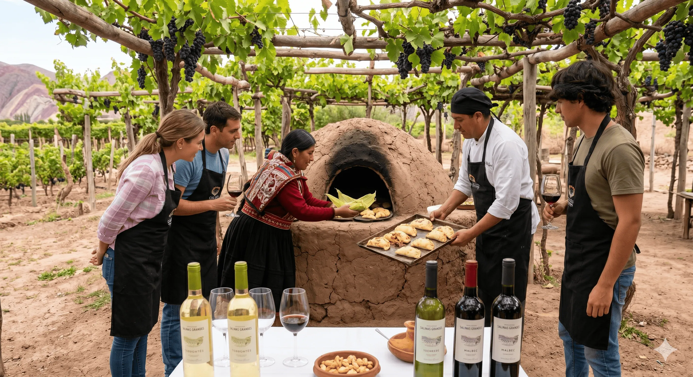
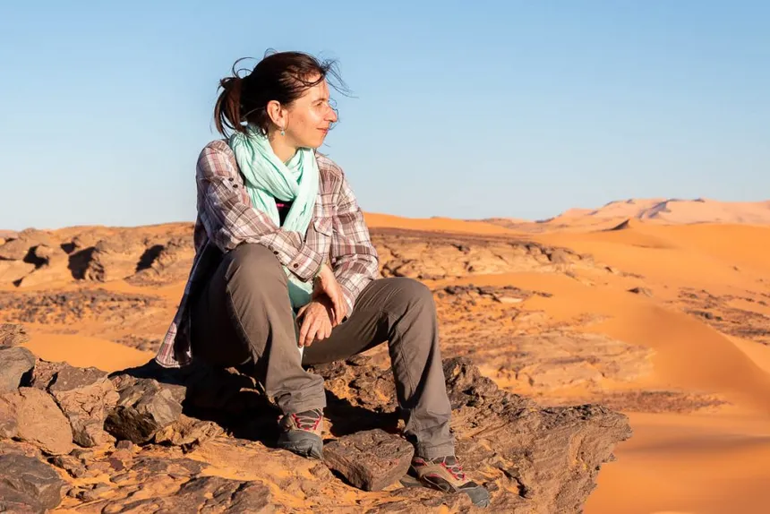

Aventura
Aventura
El mejor trekking del Cerro de los 7 Colores
Descubrí las mejores rutas para recorrer el famoso cerro de Purmamarca, con consejos de altura y equipamiento necesario...
Leer másFiltrá por categoría
Aventura
Descubrí las mejores rutas para recorrer el famoso cerro de Purmamarca, con consejos de altura y equipamiento necesario...
Leer más
CulturaLa fortaleza de los tilcaras, un viaje al pasado prehispánico en la Quebrada de Humahuaca...
Leer más
GastronomíaDesde la humita hasta el locro, te contamos los sabores que no te podés perder en tu visita...
Leer más Naturaleza
Naturaleza
Consejos para visitar las Salinas, el mejor horario para las fotos y cómo llegar desde Purmamarca...
Leer más
ConsejosTodo lo que necesitás saber para disfrutar de la altura sin riesgos: hidratación, aclimatación y más...
Leer más Aventura
Aventura
Cómo llegar al mirador del Hornocal, el mejor horario para ver los colores y qué llevar...
Leer más Cultura
Cultura
Viví el carnaval más auténtico del norte argentino, con coplas, desentierro del diablo y mucha fiesta...
Leer másLo que opinan nuestros lectores
"Excelente artículo sobre el Hornocal. Seguí sus consejos y llegué temprano, los colores eran impresionantes. Muy recomendado!"
"La guía de comidas típicas me salvó las vacaciones. Probé la humita en Purmamarca y el locro en Tilcara, una delicia. Gracias por los tips!"
"Muy útiles los consejos para el mal de altura. Seguí todas las recomendaciones y pude disfrutar de las Salinas sin problemas. Volveré a leerlos!"